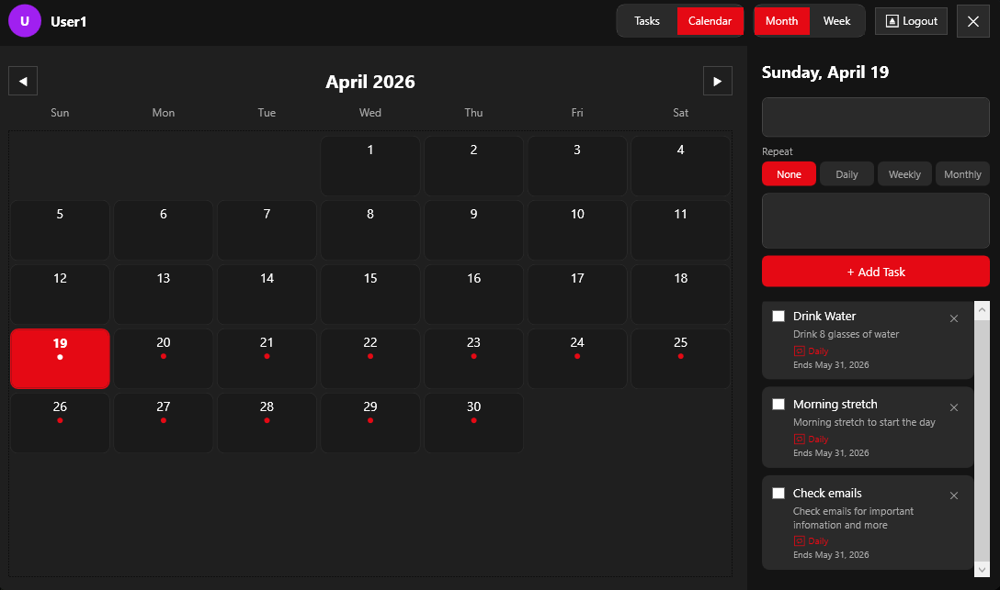
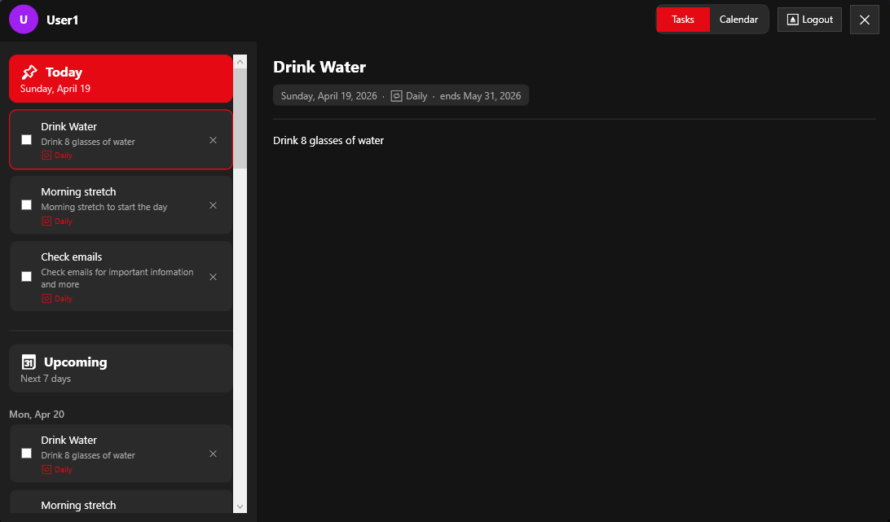

A personal task and calendar manager for Windows. Supports multiple user profiles, recurring tasks, and multiple color themes — all stored locally as JSON with no database needed.
Preview

Calendar View

Task View
Features
Data Storage
Everything is saved locally as JSON files — no account, no cloud, no database. The folder is created automatically on first launch.
Download
Unzip and run todoApp.exe — no installer needed.